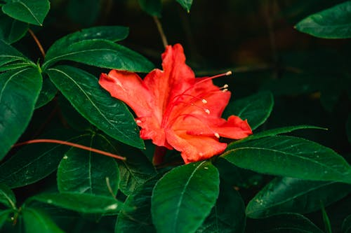

HIBISCOS

O que é?
O hibisco é uma planta vibrante e tropical, famosa por suas flores grandes em forma de trombeta e cores intensas. Existem centenas de espécies espalhadas por regiões quentes ao redor do mundo. Além de sua beleza ornamental, algumas variedades são amplamente utilizadas na culinária e na produção de chás, sendo um símbolo de energia, delicadeza e calor tropical.
Como cuidar?
Para manter seu hibisco sempre florido e radiante, siga estas dicas:
- Luz: Eles são apaixonados pelo sol! Devem receber pelo menos 6 horas de luz solar direta para florescerem bem.
- Solo: Preferem solos levemente ácidos, ricos em nutrientes e com boa capacidade de drenagem.
- Rega: O hibisco gosta de água constante. Mantenha o solo sempre úmido, mas tome cuidado para não encharcar as raízes.
- Clima: Como são plantas tropicais, eles não lidam bem com geadas. Em locais frios, precisam ser protegidos durante o inverno.
Curiosidades
- Chá Famoso: O chá de hibisco é feito a partir das sépalas da espécie *Hibiscus sabdariffa* e é conhecido por suas propriedades antioxidantes.
- Flor de um dia: Muitas flores de hibisco duram apenas 24 horas, mas a planta produz novos botões quase todos os dias durante a época de floração.
- Indicador de pH: O extrato de hibisco pode ser usado em experimentos científicos para indicar se uma substância é ácida ou básica, mudando de cor!
- Papel no Havaí: O hibisco amarelo é a flor oficial do estado do Havaí, representando a hospitalidade e a beleza das ilhas.
- Atração Natural: Suas cores vibrantes e formato facilitam a visita de beija-flores e borboletas, sendo ótimos para atrair polinizadores ao jardim.